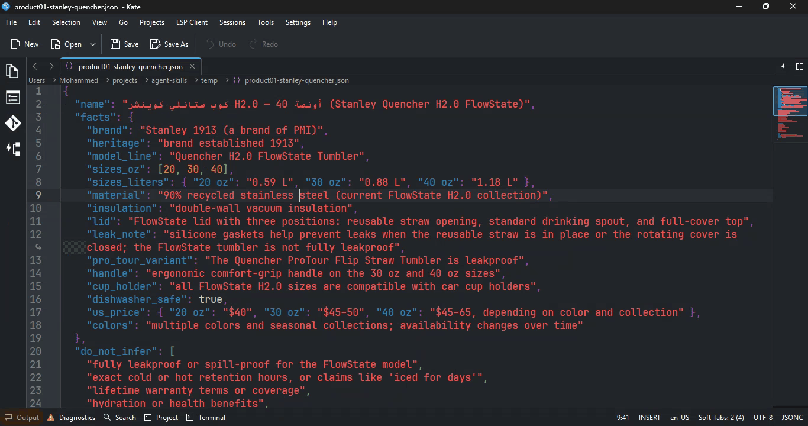
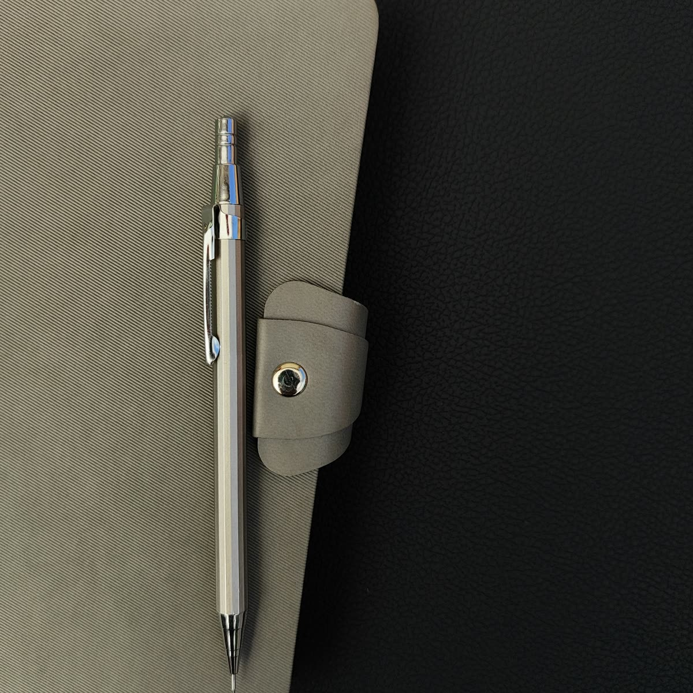
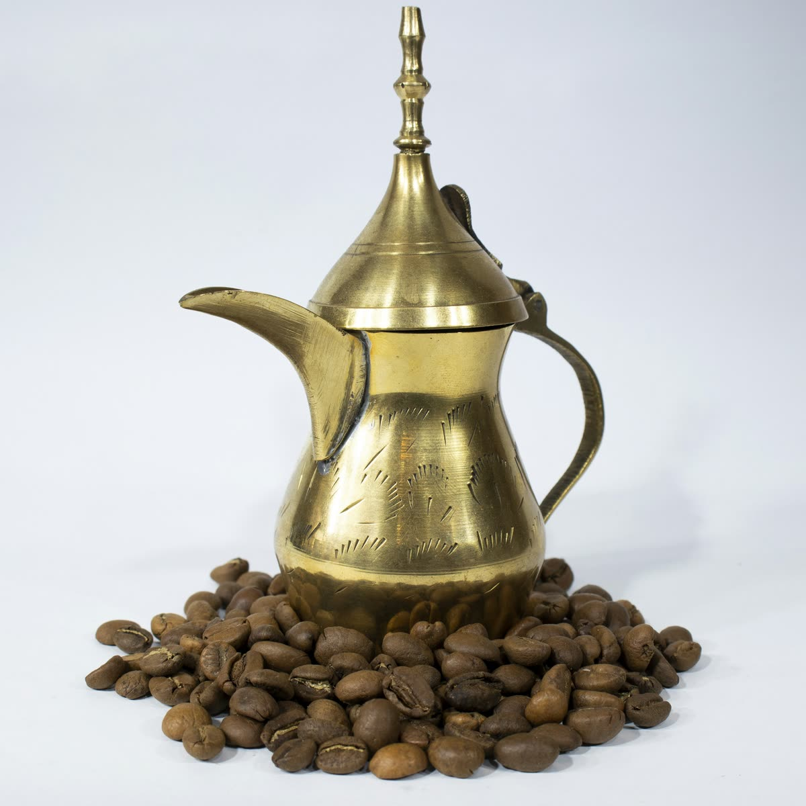
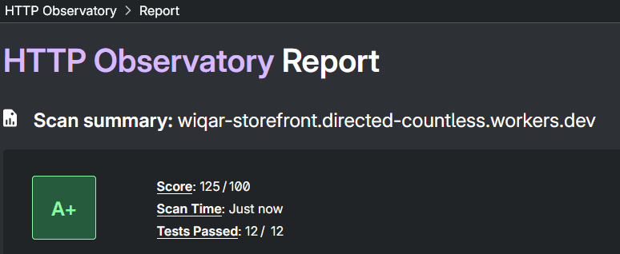

Timeline
From commit history and file dates across the three repositories — 90 commits in total.
-
Sep 16 – 19
Writing the copy system
Built and published the Arabic copy system: current GCC register, facts only, a check before delivery.
11 commits · MIT · one file (SKILL.md) -
Sep 22 – 24
Building the first pages
The first version of the site in Astro: home, categories, the product wall. Design first, selling later.
21 commits -
Sep 26 – 27
Starting the backend and the store design
The first backend code connects to Salla; the store's theme, colors, and fonts are written down.
1 backend commit + the design record (DESIGN.md) -
Sep 27 – Oct 7
A 10-day break, and the plan is decided
No commits. The plan settles: the catalogue in D1, selling on Salla, a small backend in between.
no commits — the decisions that shaped the main build -
Oct 8 – 12
The main build
The storefront gains the real catalogue, search, cart, and product pages — then passes a quality check with real numbers. The backend gains tokens, webhook checks, and the Salla cart flow — then a security review.
The blue hour is built, and the brand is completed.
49 storefront commits + 8 backend commits -
Oct 12 – 13
Final fixes and documentation
Search fixed and simplified (0.7s → one frame), the brass bug found by measuring, type checks set up in both repositories, and the project written up.
4 commits · both repositories clean and live
gcc-store-copy — the copy system
The first project is not a website. It is a system for writing Arabic product text, published as a free, open-source file any AI agent can use. Most Arabic e-commerce text reads like a translation — stiff and literal — and GCC shoppers notice before they judge the product.
The system has four rules:
- Write like the market talks. Current GCC Arabic — not formal, not translated.
- Facts only. The writing may use only the facts given in one small JSON record. No invented materials, no fake history.
- Sell, but stay true. A real effort to sell — using only what is true.
- Check before delivery. Every text is checked against the rules before it ships. Customer text stays separate from the operator's note of missing facts.
It came before the store and works for any GCC store: all 35 product descriptions in wiqar follow these rules. A real example (WQ-001, a metal pen):
Direct, specific, current — every claim comes from the product data.

do_not_infer list of claims the copy must never make.The Salla store — where selling happens
wiqar-store is a Salla store: products, stock, carts, payments, and orders all live there. It has to work on its own, because every purchase finishes on Salla's checkout page.
The design
On top of the Salla theme, the store got a full design (recorded in "the Accession Room" design file and shipped as custom CSS): colors from the brand, the Arabic type set, thin lines instead of heavy shadows — brass used only for identity and buttons. Later, the same design moved to the custom website, so both places feel like one store, not two.
The preview hub — one permanent link to the store
Salla preview links are signed and expire after about an hour, and the dashboard session that creates them expires about every 2 weeks. So opening the store day to day needed a tool, not a bookmark:
- One permanent link, where Salla's previews expire within the hour.
- «افتح المعاينة» mints a fresh signed link and lands you in the store — instant, because the current link is reused until it has only 15 minutes left.
/healthreports whether the token still works;TOKEN-REFRESH.mdturns the ~2-week rotation into a 2-minute job.- Oct 12 fix: the pinned theme version is gone and the cache key changed — a theme change can no longer break the link.
Two things that took real debugging: Salla identifies a store by its merchant
number, never by the username; and a demo store builds carts but cannot finish orders
(لا يمكن إتمام الطلب من متجر تجريبي). Both are written down in the
repositories.
The map
The shape of the build — who holds what, and who talks to whom:
Two rules keep it simple: the website never touches a credential — everything trusted happens in the backend — and every purchase finishes on Salla.
The storefront — the website customers see
Why it exists: a Salla theme can't produce this design — and more important, this route gave complete freedom in customization and in the choice of front-end tech. The site is wiqar-storefront.directed-countless.workers.dev; everything that sells stays on Salla.
- 46 pages, built in advance — finished files, nothing computed while a visitor waits.
- Served from Cloudflare's network — near the visitor, cached at the edge.
- Five interactive parts — the site's entire browser JavaScript.
- Every purchase finishes on Salla — on its own checkout page.
Why build it static
A small store shows almost the same page to every visitor. So every page is built once, in advance, with the product data already inside the HTML — visitors get finished files and nothing is calculated while they wait. The site stays fast and cheap to run, and hard to slow down even with many visitors.
The five interactive parts
Only five Svelte components run in the browser: the cart drawer, the cart button, the buy box,
the search box, and the hero. Everything else — sorting, filtering, the gallery — is small
plain-TypeScript and HTML. The cart lives in the visitor's localStorage: adding is
instant and free, and the cart becomes a real Salla cart only at checkout.


Animation — only where it helps
- Browser-native only — no animation libraries.
- A product photo morphs from grid into its product page; links prefetch on hover; filters glide.
- All of it listens to the "reduce motion" setting.
- Two animations were deleted after measuring — the search open took 0.7s to look nice, so it now opens in about one frame, with the catalogue preloaded.
Measured
- First byte 118 ms · first paint 388 ms · full load 619 ms · layout shift effectively zero.
- Assets are fingerprinted and cached for a long time; photos for a week.
- The third-party scores live in Proof.
One bug, and how it was found. The free-shipping progress bar never appeared — its fill
and its track had the same color, because two files both declared a color named
--color-accent and the second one silently won. It was found by measuring the
real styles in the browser, fixed by deleting one line, and a test now keeps it from
returning.
The engine — the catalogue and the keys
Two pieces make buying work: the catalogue's home — a Cloudflare database — and a small Worker, the only part of the system that holds Salla's credentials. The website itself never touches one.
The catalogue — Cloudflare D1
- What: Cloudflare D1 — a SQLite database on Cloudflare's network; the catalogue's home: 35 products, 10 categories.
- Why there: it carries what Salla doesn't — sale windows, featured flags, search keywords — and the build reads it once.
- How:
migrations/is the schema;bun run saleedits sale windows and pings a rebuild; the site's Worker serves it as/catalog.json. - The rule: the build validates it — a bad row fails the build, so the last working site stays live.
- The link: the two sides match products by SKU.
The backend — five routes and the keys
- A small Cloudflare Worker, live at wiqar-backend.directed-countless.workers.dev: it reads the catalogue, creates guest carts, adds items, answers a health check, and takes the Salla webhook. It never writes to Salla.
- Tokens: Salla's token pair lives in Cloudflare KV and never leaves the server. Refreshes are single-use and rotate — each refresh kills the old pair — so the code saves the new pair before using it and never runs two refreshes at once. The boring part, and the part where one wrong move quietly kills the connection.
- The webhook verifies Salla's signature (standard practice) and is the only writer of tokens.
- The public reads are cached, so repeated calls don't burn the store token's rate limit.
Checkout, step by step
The backend does this — not the browser — for two hard reasons: Salla's API doesn't work from browsers, and the credentials must never leave the server.
Tests and the review
10 tests against a recorded mock of Salla — offline, under a second — and they were proven: removing the bad-URL guard makes three of them fail. The security review closed what it found (caching on the public reads, the body-order check, a quantity clamp, the URL guard) and confirmed the repository holds no credentials, past or present.
Chosen on purpose
The brand and the stack were not defaults. Every visible choice was made deliberately — and each one has a reason.
The logo
- A piece on its plinth. The store mounts its objects; the mark is that idea in two shapes — the piece, and the line it stands on.
- The mark lives inside the name. The wordmark is drawn in Reem Kufi letterforms — and the two dots of the letter ق are replaced by the mark's two shapes.
- Arabic only. No Latin twin.
- Drawn, not typed. The wordmark is vector paths: it renders identically everywhere with no font needed — and the favicon comes from the same geometry.
The two lights
One room, two lightings — both mixed by hand. The day is warm greige. The night is the blue hour: a mid-slate evening of the same room, not a dark-mode inversion. The brass is lifted for the darker background, and the one red signal becomes an ember. A store in dark mode must still feel like a store — not an unlit gallery.
The type
The stack
- Astro — a store shows almost the same page to every visitor, so pages are built once and served as files: fast and cheap by construction.
- Svelte — added only for the five parts that must react; nothing else ships JavaScript.
- Cloudflare — Workers, D1, and KV: the site, its catalogue, and the API in one place, near the visitor.
- TypeScript + Bun — strict types as a gate in both repositories; one toolchain for run, test, and deploy.
The discipline
Every color is a token in a single file, and the Salla theme and the storefront share the same design system — so the two faces of the store cannot drift apart by accident. The choices stay protected because there is exactly one place they live.
Decisions
The architecture choices, and what each one costs:
| Choice | Other option | Why | What it means |
|---|---|---|---|
| Two repositories | One repository | The credentials live in exactly one place; the website stays public and safe | Browsing never needs the backend; buying always does |
| Catalogue in D1, joined by SKU | Read everything from Salla at build time | Faster builds, and fields Salla doesn't carry (sales, featured, keywords) | The SKU is the hard link between the two sides |
| Cart in localStorage | Server-side carts or accounts | No accounts by choice; adds are instant and cost nothing | The cart becomes a Salla cart only at checkout |
| Checkout finishes on Salla | A custom checkout | Payment, stock, and orders belong to Salla; no card data comes near this project | The shopper pays on Salla's page |
| Tokens in KV, written only by the webhook | Environment variables | Token changes need no redeploy; one writer | KV is the most protected asset in the system |
| Checks and tests before "done" | Ship when it looks right | The checks caught real bugs; the bad-URL guard is pinned by a test that fails without it | Every change passes type checks and tests first |
Where it stands
Now: a live, fast store website; a real Salla store with the same design; a one-link tool that opens it every day; a backend that holds the only credentials; two public repositories with tests and checks — and no secrets in their history.
Next: a real (non-demo) Salla store so orders can complete; real photography to replace the placeholders file by file; and order webhooks — the backend already has a place for them.
Proof — third-party checks
Two independent checks, run against the live storefront — the results, as they came back.
PageSpeed Insights (Google) — pagespeed.web.dev


Mobile: 87 · Desktop: 99 performance. Accessibility, best practices, and SEO: 100 in both. Agentic browsing — how ready the page is for AI agents: 2/2 in both.
HTTP Observatory (Mozilla) — developer.mozilla.org/observatory

A+ — 125/100, all 12 tests passed. The security headers the store now sends are what this grade measures.
Appendix — one code example
One refresh at a time — backend/src/tokens.ts
// Refresh tokens are single-use: every refresh returns a new one and the old
// one dies — reusing one revokes every token. So the new pair is always
// persisted BEFORE the access token is used.
/** One refresh at a time per isolate — parallel refreshes would kill the rotation. */
let refreshing: Promise<SallaTokens> | null = null;
if (!refreshing) {
refreshing = refresh(tokens, context, store).finally(() => { refreshing = null; });
}
return (await refreshing).accessToken;